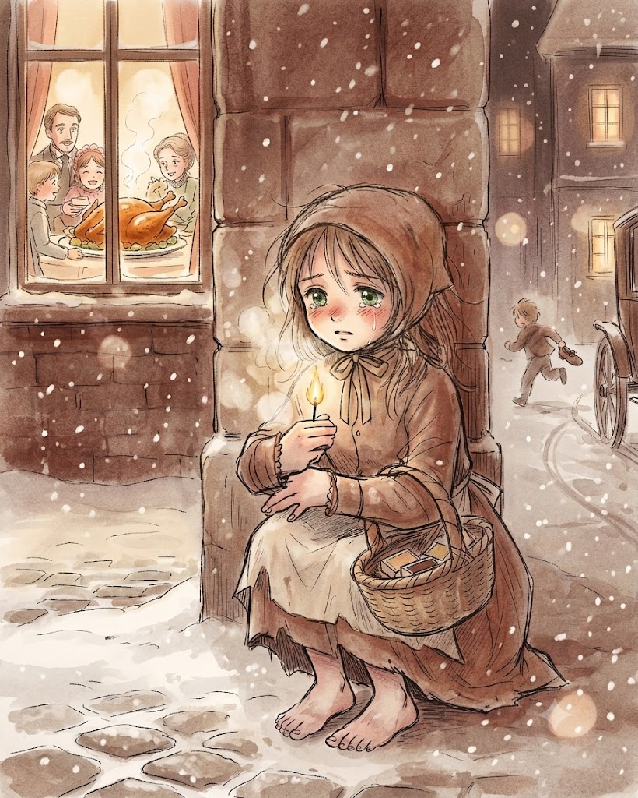
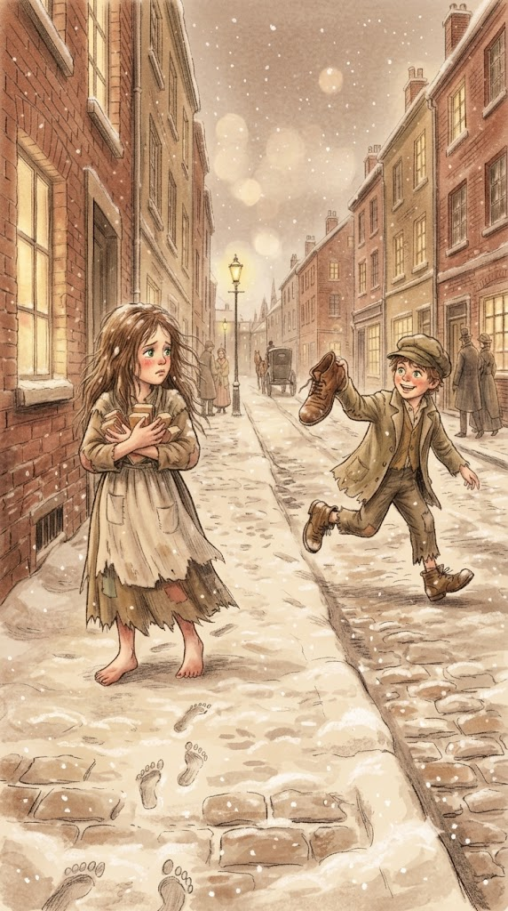

지독히도 추운 날이었다. 눈이 내리고 어둠이 찾아왔다. 그해의 마지막 저녁이었다. 한 가엾은 소녀가 모자도 쓰지 않고 맨발로 춥고 우울하게 거리를 걷고 있다. 물론 집을 나설 때 신발을 신고 있었지만 지금은 아무 소용이 없었다. 신발은 엄마의 것이었기에 소녀에게 너무 컸다. 어린 소녀는 길을 뛰어 건너다가 신발 한 짝을 잃어버렸는데 마차 두 대가 덜컹거리며 엄청나게 빨리 지나가는 바람에 신발을 다시 찾을 수 없었다. 한 소년이 나중에 아이를 낳으면 요람으로 쓰겠다면서 나머지 한 짝을 가지고 달아나버렸다. 그래서 어린 소녀는 맨발로 걷고 있었다. 두 발은 꽁꽁 얼어 울긋불긋했다. 낡은 앞치마에 들고 가는 성냥갑 몇 개가 있었다. 소녀는 성냥 하나를 손으로 들어 내밀었다. 하지만 하루 종일 소녀한테 성냥을 사려는 사람은 아무도 없었다. 단 한 사람도 1센트를 주지 않았다. 추위와 배고픔으로 벌벌 떨면서 소녀는 기어갔다. 비참한 그림이다, 가엾은 소녀! 눈꽃이 소녀의 긴 머리카락 위로 떨어져 내려 목을 구불구불 휘감았다. 창문으로 불빛이 새어 나오고 거위를 굽는 근사한 냄새도 흘러나왔다. 한 해의 마지막 날이었다. 그렇다, 소녀는 그 생각이 간절했다!